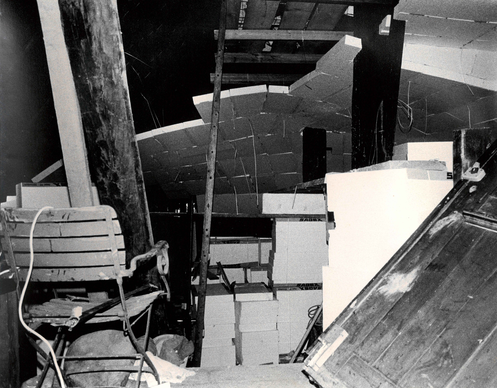
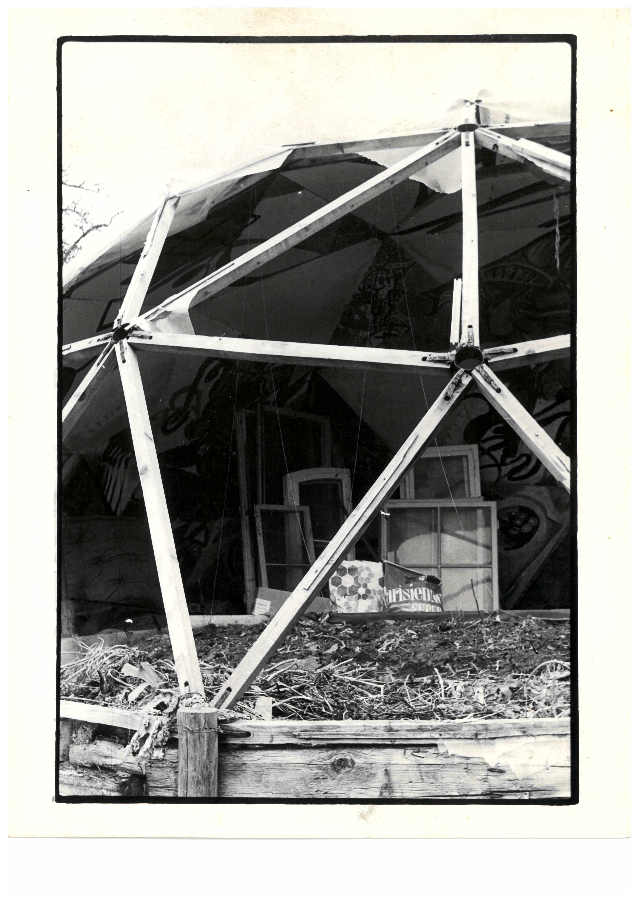

Auf den Spuren eines unkonventionellen Hauses
–––––
«But the only thing that will allow each of us to create his or her Utopia is praxis […]» Bill Voyd, «Funk Architecture», London 1976, S.159
Der Leerlauf meines Velos rasselt, währenddessen ich auf der Strasse den Schallenberg hinunterrolle. Der Schallenbergpass trennt das Emmental vom oberen Aaretal mit der Stadt Thun. Doch von dieser Grenze merke ich nichts. Von Zürich aus gestartet und Luzern passiert, wirkt die Umgebung schon seit längerem so, als wiederhole sich das gleiche Bild. Bergtäler und Häuser, die darin verstreut sind. Dazwischen Verbindungsstrassen.
Mein Ziel ist ein kleiner Weiler namens Wangelen in der Gemeinde Buchholterberg. Wangelen liegt auf einem grünen Hügel unweit von Thun. Jedoch weit genug, so dass es wirkt, als gäbe es nichts anderes auf dieser Welt als weitere kleine Weiler und grüne Hügel. Ein Ort, in dem die Landwirtschaft das Bild der Umgebung prägt. Bauernhäuser, Felder und vereinzelt Tiere auf Wiesen. Menschen begegne ich wenigen. Ausser der Reibung meiner Veloreifen auf dem Asphalt und dem Wind höre ich nichts. Mir gehen Geschichten durch den Kopf, die aus diesem Fleck der Schweiz stammen. Mythen und Geister. Vertreibung von Täufern vor 300 Jahren.(1) Kriminalromane. Sowie die Geschichte, die mich selbst mit diesem Ort verbindet.
Sie beginnt mit einem 400 Jahre alten Hochstudhaus. Ein Haus, das beinahe in sich zusammenfällt, weil sich niemand mehr darum kümmert. Bis es 1969 mit, für heutige Verhältnisse, wenig Geld von einem Ehepaar aus Basel gekauft wird. Kurt ist Bildhauer und Künstler, Jeanne Musiklehrerin. Für ihre Tätigkeiten brauchen sie Platz. Jede Woche pendeln sie von ihrem Wohnhaus in Basel zum neuen «Atelier» in Wangelen, das bald viele Namen trägt. «Begegnungsort», «Alternatives Haus» oder einfach «Werkstatt Wangelen».
Nebst den fünf Kindern sind auch häufig Freunde und Freundesfreunde der Familie mit dabei. Kurt und Jeanne merken, dass etwas passiert mit denen, die kommen. Nach einem anfänglichen Kulturschock(2) – durch die veränderten Umstände des Alltags – werden die Menschen allmählich kreativ. Sie finden ihre Rolle in der Gemeinschaft, beteiligen sich und werden zu Gestalter:innen ihrer freien Zeit, die sie zur Verfügung haben. Kurt und Jeanne beobachten das Verhalten der Gruppen, die sich in der Werkstatt Wangelen zusammenfinden. Ihre Bedürfnisse sind die Grundlage für die architektonischen Eingriffe am Haus.
Eine der ersten Handlungen besteht darin, ein grosses Dach in einem 90-Grad-Winkel zur alten Struktur zu errichten. Zur gleichen Zeit, als Gordon Matta-Clark 1974 eine Fassade wegschneidet, um das Haus an den Niagarafällen zu öffnen,(3) schneiden Kurt und Jeanne ihr Haus auf, um dessen Volumen zu erweitern. Konzerte, Theater oder einfach gemeinsame Aufenthalte brauchen einen grossen Raum. Holzbalken aus dem Steinenschulhaus in Basel, das 1969 abgerissen wird,(4) sowie ein Baukran-Element bilden die Struktur für eine Überdachung.
Montiert wird alles von Hand oder mithilfe selbstgebauter Flaschenzugkonstruktionen. Als nächstes bekommt das Dach eine Fassade. Auch diese wird als Bricolage aus wiederverwendeten Bauteilen konstruiert. Es wird verwendet, was zur Verfügung steht. Grosses Eigenkapital oder einen Baukredit gibt es nicht. Was die einen als Abfall bezeichnen, findet eine neue Bedeutung in der Werkstatt Wangelen.

Das Haus verändert sich stetig im Selbstbau als Architektur ohne Architekt:innen.(5) Elemente werden hinzugefügt, neu positioniert und wieder entfernt. Wie bei Kurt Schwitters «Merzbau» gibt es auch für dieses Projekt keinen eigentlichen Plan.(6) Neue Ideen für Veränderung werden der Gemeinde als Skizzen vorgelegt. Gegen Süden öffnet sich das Haus mit Terrasse und Fenstern zum Alpenpanorama. Der Strasse kehrt es den Rücken zu, was für die Bauernhäuser in der Umgebung nicht untypisch ist. Auch dass sich diese mit der Zeit verändern und sich den Lebensweisen der Bewohner:innen anpassen, ist nicht unüblich.(7)
Unüblich ist jedoch die neue Nutzung der Werkstatt Wangelen. In einer Zeit, in der Jugendliche in Schweizer Städten mehr kulturelle Freiräume fordern und Krawalle entstehen,(8) sind die Türen der Werkstatt Wangelen stets offen für eine Gemeinschaft von Freidenker:innen, Künstler:innen, Musiker:innen, Esoteriker:innen und Theatergruppen der späten 1970er Jahre. Innerhalb der eigenen Parzelle wird Freiheit praktiziert und gelebt. Scheinbar ungestört, denn von dem Briefwechsel zwischen Kurt und Jeanne und den Behörden bekommen die Besucher:innen meist nichts mit.
Nach bereits zehnjährigem Bauen und Erweitern der Werkstatt will die Baubehörde nun wissen, was sich verändert hat. Von den Skizzen will die Gemeinde nichts gewusst haben, und Pläne müssen her, zur nachträglichen Bewilligung der Eingriffe. Der Ton ist scharf, es wird mit Anzeigen gedroht, um Druck zu machen. Eine Baueingabe wird dann auch eingereicht, gegen die seitens der Nachbarschaft sofort Einsprache erhoben wird. Einsprachen gegen die verbotene Nutzung des Hauses als «Ferienwohnung», «Kurort» oder «Seminarraum». Ebenso wird vor einer Gefährdung der Kultur «unserer Bevölkerungsgruppe durch die fremden Einflüsse» gewarnt.
Die «Fremden» sind die Gäste der Werkstatt Wangelen. Zu ihnen kann keine Beziehung aufgebaut werden. Es gibt keine soziale Praxis,(9) denn dafür ist die Zahl der Besucher:innen zu gross, die Wechsel zu häufig und die Lebensweisen sind zu unterschiedlich. Auf der Südterrasse der Werkstatt legen sich –Gäste nackt in die Sonne – eine Parzelle weiter unten jätet ein Bauer die Wiese. Experiment, Liberalität und Globalität stösst auf Tradition, Konservativität und Regionalität.
Um 1984 erreicht die Geschichte dieses Konflikts Schweizer Städte, denn Tageblätter und Zeitschriften berichten darüber.(10) Ein Oberassistent des Instituts für Hochbauforschung der ETH Zürich schaltet sich ein, indem er die Architektur und die Art lobt, wie diese im Einklang mit der Umgebung steht. Zuvor besucht er die Werkstatt Wangelen mit einigen Studierenden für eine Seminarreise. Ein anderer Architekt betont wiederum die Gefahren des Selbstbaus für Besucher:innen sowie die Verletzung des Ortsbilds.
Der Streit endet in einer Verfügung der Stadt Thun, die Kurt und Jeanne und die Werkstatt hart trifft. Ein Verbot, das es den beiden untersagt, weiterhin Gäste oder Freunde zu empfangen. Durch polizeiliche Kontrollen wird das Verbot durchgesetzt. Spätestens nach 1985 ist es wieder ruhiger im Weiler Wangelen. Fotografien bezeugen aber, dass das Bauen nicht aufhört. Im Stillen, im Inneren des Gebäudes, verändern sich die Räume stetig weiter. So dass es heute zum Teil schwierig ist, auf Fotografien der frühen 1990er Jahre abgebildete Räume dem Gebäude zuzuordnen. 
Der komplette Stillstand der Werkstatt Wangelen tritt erst in der Nacht vom 6. Dezember 1996 ein, als das Haus niederbrennt. Was genau geschehen ist, dazu gibt es zwei Varianten der Geschichte. Die eine erzählt von Brandstiftung, der Weiler Wangelen holt sich die Ruhe mit Gewalt zurück. Die andere von einem elektrischen Kurzschluss infolge nicht sachgemäss ausgeführter Elektroarbeiten.
Bewiesen ist nichts, doch beiden Geschichten ist gemeinsam, dass sich Kurt und Jeanne mit ihrem Haus ein eigenes System aufgebaut hatten, mit eigenen Regeln und Prinzipien. Jedoch konnten diese über längere Zeit den übergeordneten Systemen nicht mehr standhalten – dem der Gesellschaft vor Ort und dem der rechtlichen Normen und Bauvorschriften. Ein Experiment, das letztlich scheitert. Aber eines, das Spuren hinterlässt bis heute.
Ich nähere mich mit dem Velo allmählich dem Weiler Wangelen. Es ist ruhig. Auf der Strasse treffe ich niemanden. Der Weg führt vorbei an einer geschlossenen Schule. Auch die Käsi und die Bäckerei haben zugemacht.(11) Das Postauto bedient die Station neben dem Haus schon länger nicht mehr. An der gleichen Stelle, wo es früher einen kleinen Eingang in das alte Hochstudhaus gab, befindet sich heute wieder eine Tür. Sie führt in das neue Wangelen. Aufgebaut, wenige Jahre nach dem Brand und ohne Wahlmöglichkeiten hinsichtlich der Architektur des Hauses, denn die Gemeinde liess zu diesem Zeitpunkt nicht mehr mit sich verhandeln. Ich fahre um das Gebäude herum, direkt zum Aussenplatz.
Die Familie ist bereits da. Es wird Boule gespielt auf dem Kiesplatz. Mir fällt auf: Der Kiesplatz hat sich vergrössert. Wo es früher ein Gefälle im Terrain gab, ist nun eine Ebene. Kurt und Jeanne, meine Grosseltern, haben offensichtlich den Hang aufgeschüttet. Der kleine Bagger steht noch auf dem Platz neben gelagertem Baumaterial, das darauf wartet, irgendwo einen Verwendungszweck zu bekommen. So ändert sich viel im kleinen Weiler Wangelen und vieles bleibt gleich. Wie die Werkstatt Wangelen in Zukunft aussehen wird, dafür gibt es noch immer keine Pläne.
Jeanne wirft das Schweinchen in den Kies und die nächste Runde Boule startet. 
–––––
(1) Katharina Zimmermann, Die Furgge, Bern 1989.
(2) «So a new person to arrive is often faced with a problem: his survival is provided for: all his time is free time – what is he going to do with it? We call this ‹curlutar shock›. But sooner or later most begin to settle into a rythm – each into his own natural rythm.» Bill Voyd, «Funk Architecture», in: Paul Oliver (Hg.), Shelter and Society, London 1976, S. 156–167, hier S. 158.
(3) Gordon Matta-Clark, «Bingo», 1974, The Museum of Modern Art, New York.
(4) Johann Jacob Stehlin, Architectonische Mittheilungen aus Basel, Stuttgart 1893, S. 77–84. Universitätsbibliothek Basel, UBH AW I 48 Folio https://doi.org/10.3931/e-rara-111602 / Public Domain Mark
(5) Bernard Rudofsky, Architecture Without Architects. A Short Introduction to Non-Pedigreed Architecture, New York 1964.
(6) Elizabeth Burns Gamard, Kurt Schwitters’ Merzbau. The Cathedral of Erotic Misery, New York 2000.
(7) Adrian Atkinson, «Bernese Middle Land Farmhouses», in: Oliver, Shelter and Society (wie Anm. 2), S. 49–65, hier S. 50. «The main consequence of this structure was the provision of enough space to house all the farm functions; and any change in farming method, or any necessary expansion could be accommodated under the existing roof.»
(8) Miklós Klaus Rózsa und Peter Kamber, Miklós Klaus Rózsa, hg. von Christof Nüssli und Christoph Oeschger, Zürich 2014.
(9) «Nachbarschaft am Wohnort bedeutet eine soziale Praxis, deren Gestaltung sich auf Gewohnheiten und Verhaltensweisen der einzelnen Menschen und ihre Beziehungen ausrichtet.» Christina Schües, «Was heisst eigentlich Nachbarschaft», fiph. Journal 26 (Okt. 2015): Nachbarschaft, S. 4–10. https://fiph.de/veroeffentlichungen/journale/cover-downloads/fiph-Journal-Herbst-2015.pdf?m=1570630324& (abgerufen am 23. Mai 2023), hier S. 9.
(10) Nachzulesen in folgenden Artikeln: Hanspeter Bundi, «Ein Haus», Das Magazin 30, 28. Juli 1984; Robert Schiess, «Ein alternatives Haus. Ein Künstler baut ein Haus», Werk, Bauen + Wohnen 72 (1985), Nr. 7/8, S. 61–62; Alice Baumann, «Wo Kultur mit dem Gesetz in Konflikt gerät», Der Bund, 13. September 1983.
(11) Stefan Kammermann, «Nach fünf Generationen zieht Bäckerfamilie einen Schlussstrich», Berner Zeitung, 26. Juli 2017.